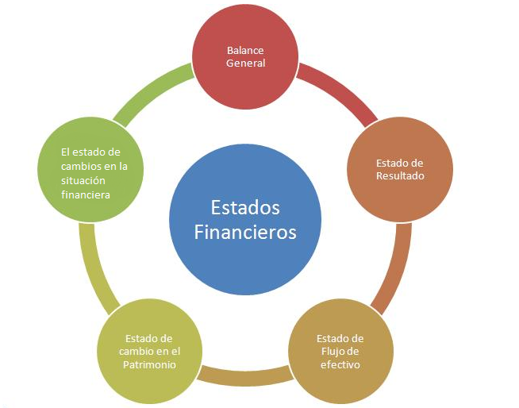

Estados Financieros
¿Qué son los estados financieros?
Los estados financieros han de reflejar una imagen fiel de la compañía.
Son los documentos de mayor importancia que recopilan información sobre la salud económica de la empresa, cuyo objetivo es dar una visión general de la misma.
Se incluyen dentro de los estados financieros: el balance de situación, la cuenta de pérdidas y ganancias, el estado de flujos de efectivo o la memoria.
Todos los documentos recogidos tienen que caracterizarse por ser fiables y útiles, teniendo que reflejar realmente lo que está sucediendo en la empresa.
Presentación de los estados financieros
Las sociedades comerciales deben presentar estos documentos durante un periodo limitado posterior a su año contable, el cual suele ir desde el 1 de enero hasta el 31 de diciembre.
Por su parte, las compañías que realicen cierres inferiores al año (por ejemplo, semestrales) deberán presentar cada estado financiero de forma totalmente independiente.

Elementos principales de los estados financieros
Activos: Los activos hacen referencia a las propiedades o derechos legales que tienen las empresas sobre bienes que tengan algún valor monetario. Se considera que este valor puede representar beneficios económicos futuros.
Pasivos: Los pasivos son la representación financiera de las obligaciones presentes que tiene una empresa causadas por actividades pasadas. Se considera que el cumplimiento de estas actividades puede representar beneficios económicos.
Capital: El capital contable designa la diferencia entre el activo y el pasivo de una empresa. Refleja la inversión de los propietarios en una entidad y consiste generalmente en sus aportaciones más o menos sus utilidades retenidas o pérdidas acumuladas, más otro tipo de superávit como el exceso o insuficiencia en la acumulación del capital contable y las donaciones.
¿Cuáles son los 5 estados financieros de una empresa?
Los siguientes son los 5 estados financieros básicos de una empresa:
- El balance general
- El estado de resultados
- El estado de cambios en el patrimonio
- El estado de cambios en la situación financiera
- El estado de flujos de efectivo.
Características de los estados financieros
Por otra parte, las características que deben poseer los estados financieros son las siguientes:
- Comprensibilidad. La información debe ser fácil de entender, para accionistas, empleados, instituciones públicas o posibles inversores entre otros agentes
- Relevancia. En este caso la información debe tener una cierta importancia, la cual si se llegara a omitir podría significar un resultado del estudio de la empresa radicalmente distinto. Por ello debe reunir información relevante y omitir la que no lo es
- Fiabilidad. La neutralidad y la ausencia de costes de agencia deben ser la bandera de los estados financieros
- Importancia Relativa. Para que podamos sacar conclusiones con periodos anteriores, la información debe poseer una cierta homogeneidad, tanto en los tipos de datos mostrados como en su forma de representarlos
Video
Mapa Conceptual
Bibliografía:
- Cuales son los 5 estados financieros https://www.rankia.co/blog/mejores-opiniones-colombia/4257544-cuales-son-5-estados-financieros
- Caracteristicas de los estados financieros https://economipedia.com/definiciones/caracteristicas-de-los-estados-financieros.html
- Elementos de los estados financieros https://www.lifeder.com/elementos-estados-financieros/